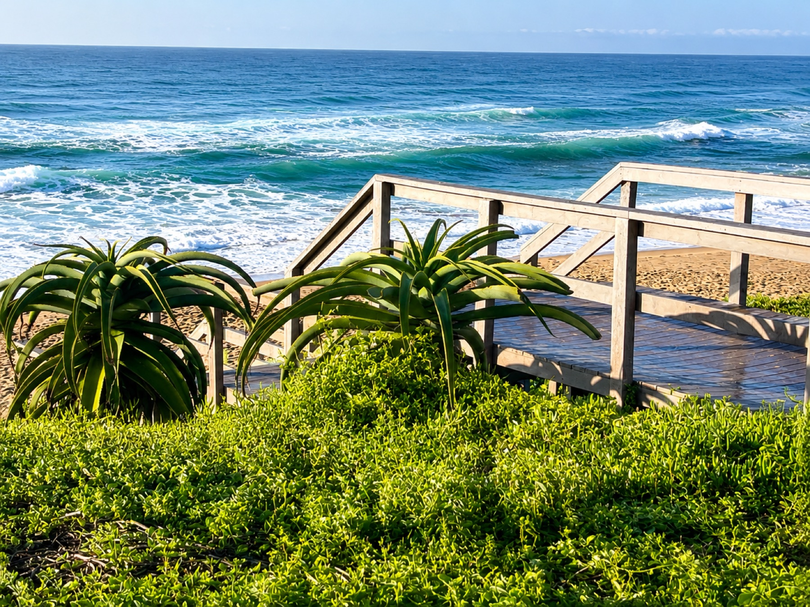

Attending the South African Council of Shopping Centres Congress at Durban ICC from 19 to 21 October? Here’s what the live programme means for your stay on the Bluff.

Monday has more than one starting point
The official programme puts retail tours in the morning, with registration for tour delegates listed from 06:30. The congress registration and information desk runs from 10:00 to 17:00. Delegate bag collection is listed from 10:30 to 12:30.
The exhibition opens at 14:30 and the congress itself at 14:45. If you have booked a retail tour, your Monday will look very different from that of a delegate attending only the afternoon sessions. Do not use the congress opening time as your arrival plan without checking what you booked.
Check what your ticket covers
The event organiser lists some add-ons separately from congress entry. Monday’s retail tour and speed-networking lunch have their own booking terms. The Monday cocktail party is listed as included for registered delegates, while bringing a guest has separate conditions.
We think the useful question is not “What is happening?” but “Which parts am I registered for?” Review your confirmation, especially if you expect to join a tour, meal or evening function. Event times and access rules can change, so use the organiser’s events page before committing to other plans.
Tuesday is the longest congress day
The programme lists registration from 08:00 to 16:30 and the exhibition from 08:00 to 17:00 on Tuesday 20 October. The main morning session begins at 09:15, and the day includes talks on retail culture, community and consumer change.
This is the day to protect your attention. If you want to meet people at the exhibition, find the gaps in your own session plan before the day begins. Trying to hold every conversation between talks can mean missing the people you came to meet.
Our suggestion is to choose one priority from the talks and one from the exhibition. That gives you a clear reason to move between both parts of the congress without treating the programme like a race.
Wednesday calls for a different exit plan
On Wednesday 21 October, the registration desk is listed from 08:00 to 12:00 and the exhibition from 08:00 to 14:00. The morning congress session starts at 09:00.
Those shorter windows matter if you are meeting an exhibitor, collecting material or heading to the airport later. Arrange any final conversation early enough that you are not relying on the exhibition still being open in the late afternoon.
What about the Tuesday evening event?
The organiser lists a separate off-site social dinner in Umhlanga on Tuesday evening. It is not at Durban ICC. If you are attending, check your event booking and travel plan on their own terms, rather than assuming the same ride covers both venues.
That is one place we would avoid a tight connection. The dinner adds another location after a full congress day. Decide how you will get there and return before the evening, particularly if you have Wednesday morning sessions.
Use the Bluff as your base, not your timetable
4Shore Guesthouse is at 28 Foreshore Drive, Ocean View, Bluff. Check the route to Durban ICC each morning using live traffic. Conference access, parking, collection desks and tour meeting points are separate questions; the organiser’s instructions should settle the last three.
If you need to compare car travel with a booked ride, our Durban transport guide can help. Our business-stay guide covers the room and arrival questions worth asking before your stay.
We see the best use of a coastal base as a change of pace between work days, not a reason to add extra outings each night. Leave room to review notes, prepare questions and rest before the next session.
FAQ: SACSC Congress in Durban
Where and when is SACSC Congress 2026?
The organiser confirms 19–21 October 2026 at Durban ICC. Check the official programme for session times.
Does the congress start at the same time each day?
No. Monday has early optional tours and afternoon congress sessions; Tuesday and Wednesday begin with earlier registration and exhibition access.
Are retail tours part of every delegate’s entry?
Do not assume so. The organiser lists retail tours as separate booked activities for registered congress delegates.
Is Tuesday’s evening dinner at Durban ICC?
No. The organiser lists an optional social dinner in Umhlanga. Confirm its location, booking terms and travel plans.
Ask about staying at 4Shore
Winston is the owner and host of 4Shore Guesthouse and the person guests can contact directly about rooms, rates, availability and practical questions. Reach Winston on +27 83 254 4825 or 4shoredurban@gmail.com. The guesthouse is at 28 Foreshore Drive, Ocean View, Bluff, Durban, KwaZulu-Natal, 4052.